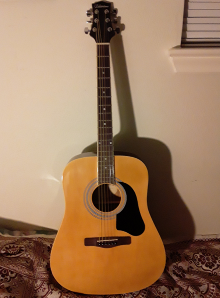

Update
Dear friends,

Roma's acoustic guitar.
1. Hard Times traditional
2. Wicked Game Chris Isaak
3. Lil' Darling Neal Hefti
4. Continuum Jaco Pastorius
5. Yesterday Lennon/McCartney
6. Corcovado (Quiet Nights of Quiet Stars) Jobim
7. Knocking on Heaven's Door Bob Dylan